3新增业务模块
57自动化用例全部通过
19关键步骤截图
0回归页面异常
一、寻宠启事
发布 → 待审核 → 撤回 → 后台审核发布 → 前台展示与详情 → 非法照片拦截。
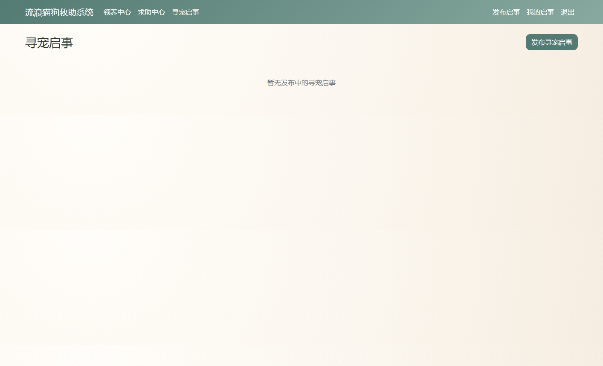
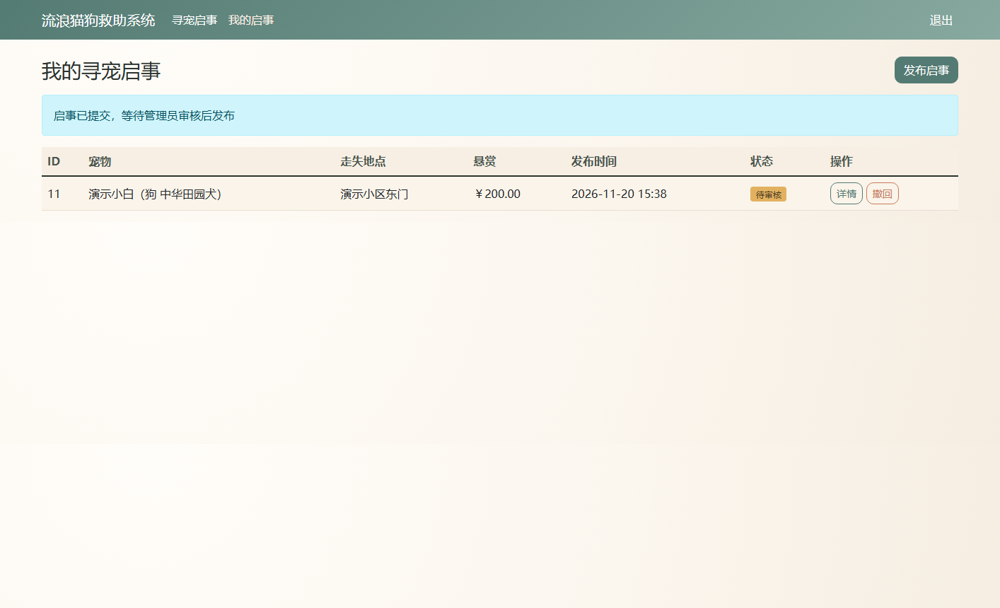
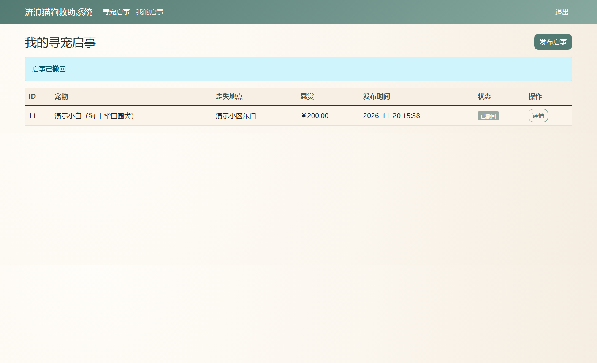
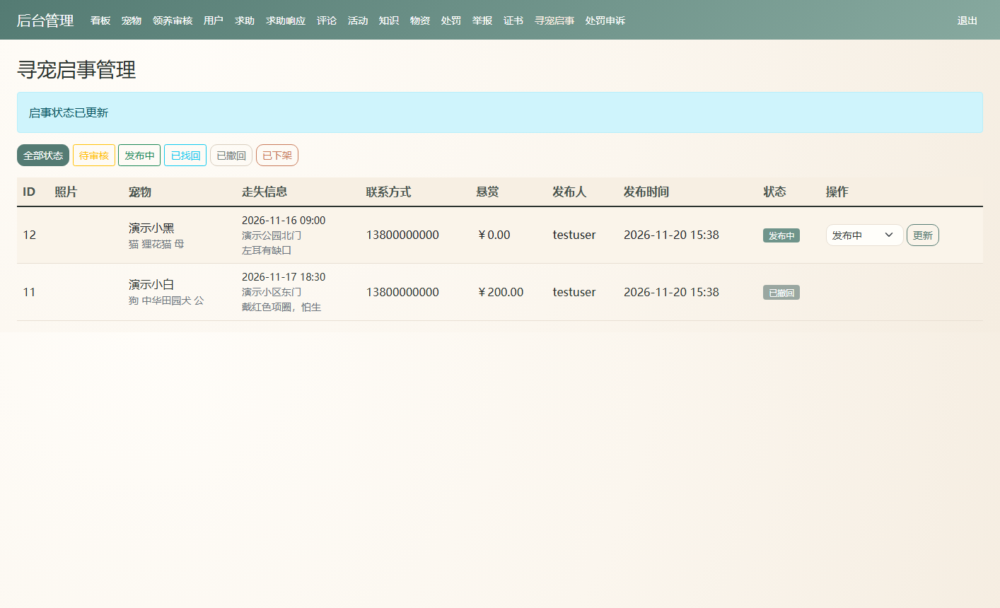
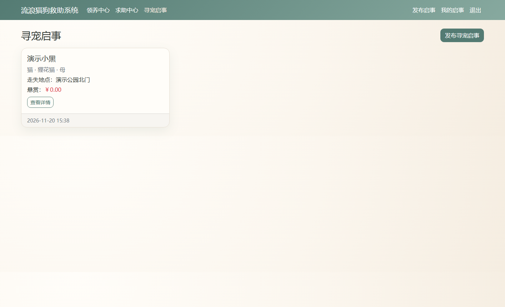
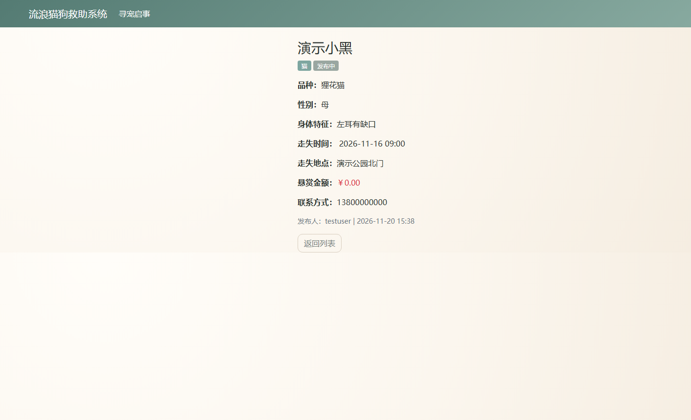
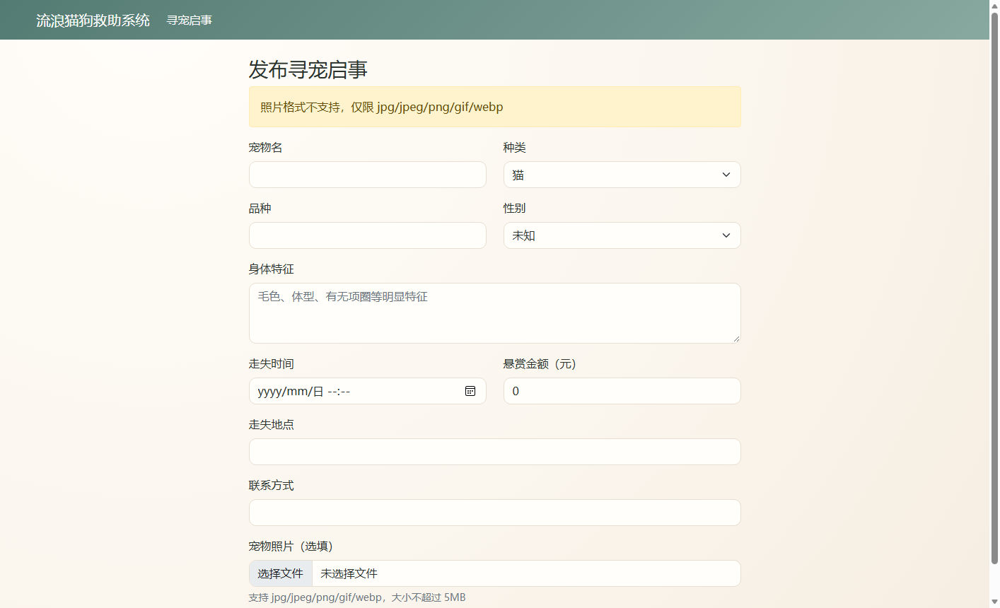
二、求助响应
审核求助 → 提交响应 → 重复响应拦截 → 后台状态流转 → 我的响应 → 发布人限制。
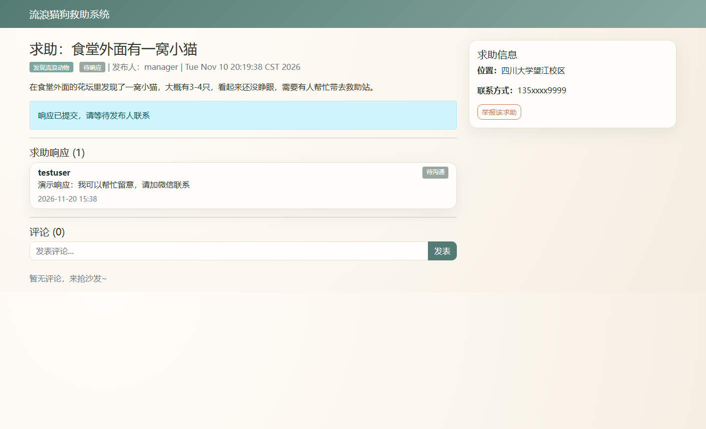
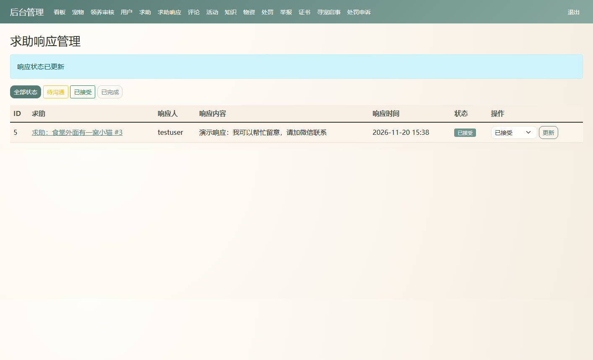
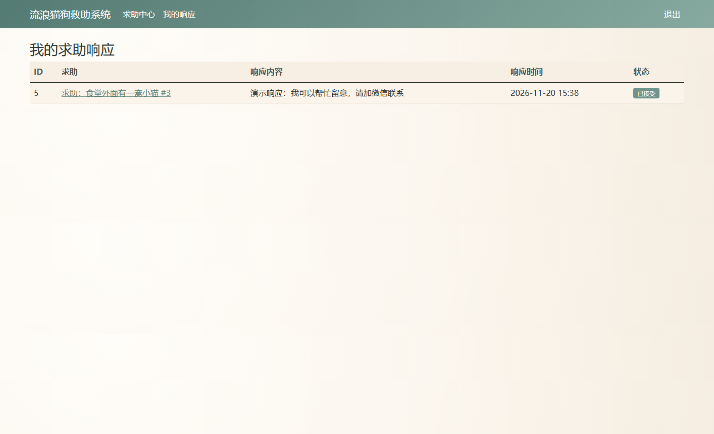
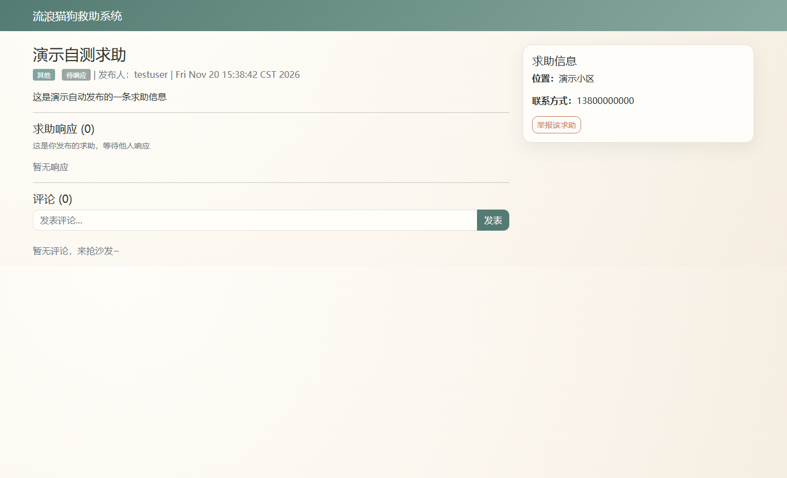
三、处罚申诉
后台新增处罚 → 用户申诉 → 重复申诉拦截 → 后台复核解除 → 处罚自动失效。
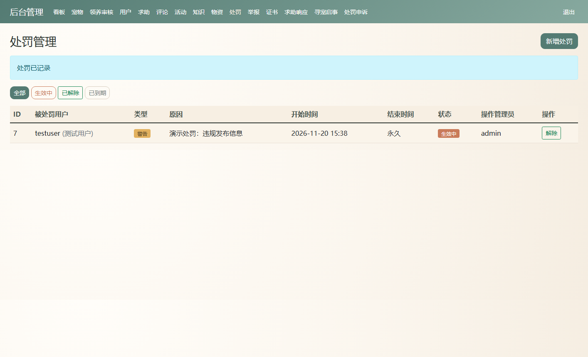
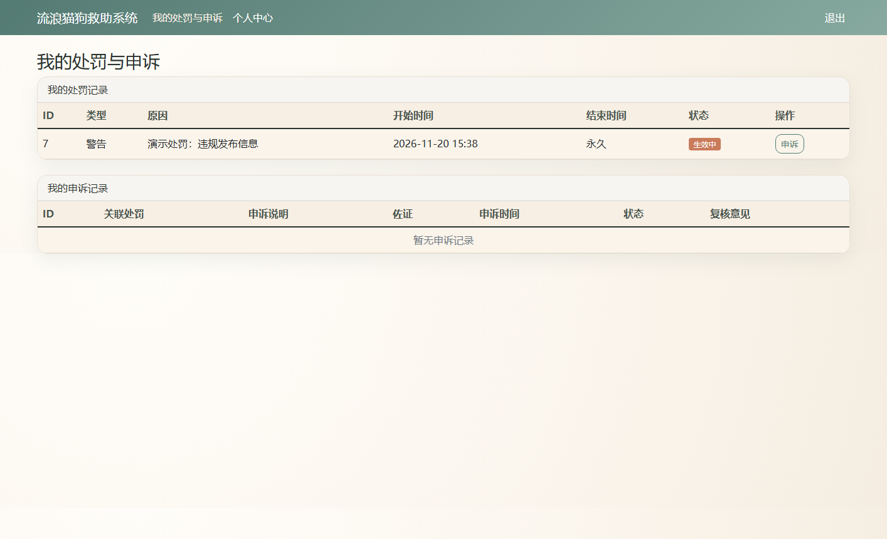
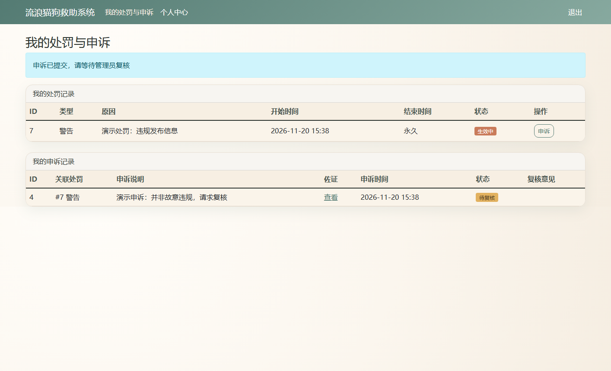
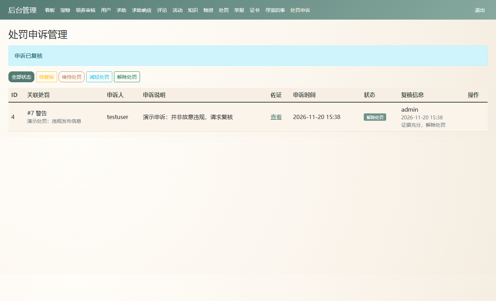
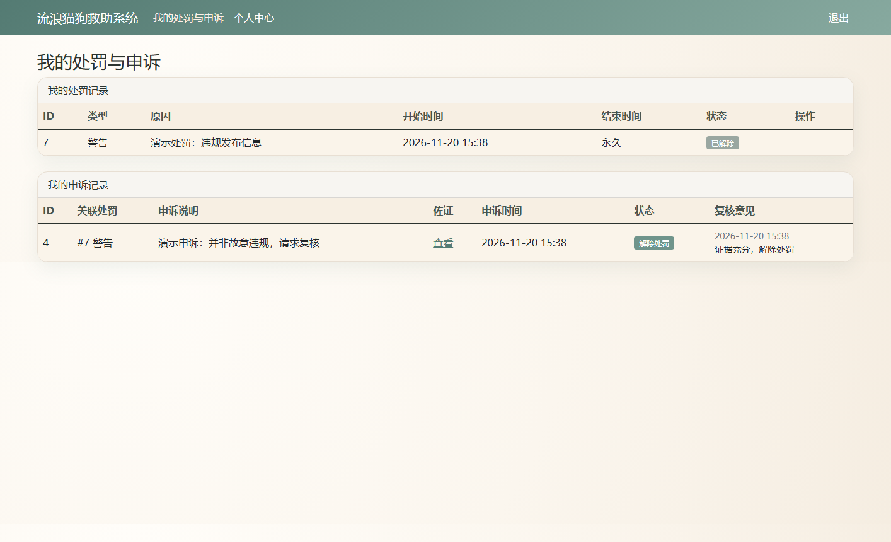
四、后台看板与统计
侧边栏新增三个入口，待办统计接入待审核寻宠与待复核申诉。
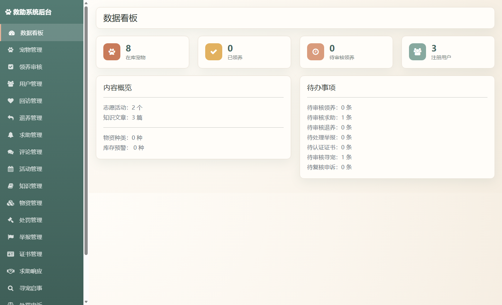
测试覆盖
- 寻宠启事：发布、待审核、撤回、后台审核发布、标记已找回、下架筛选、游客不可见、非法照片拦截、照片上传。
- 求助响应：提交、重复拦截、列表、状态更新（待沟通/已接受/已完成）、我的响应、发布人禁止响应。
- 处罚申诉：新增处罚、申诉、重复拦截、他人处罚越权拦截、复核维持/减轻/解除、解除后处罚自动置为已解除。
- 看板与导航：待审核寻宠、待复核申诉计数，后台侧边栏入口。
- 回归：宠物、知识、活动、求助、举报、证书、用户、物资、处罚、评论等 16 个既有页面全部正常。